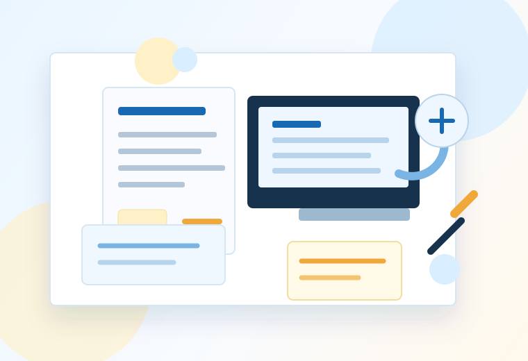

毎月の請求書作成に半日かかる
中小企業のバックオフィス・営業事務・総務の方へ
Excel転記、二重入力、月末残業。
その“当たり前の手間”、減らせます。
AIやITツールを増やす前に、まずは今の仕事の流れを整理します。
Microsoft 365・AI・自動化ツールを活用し、
転記作業や確認業務などのムダを減らしながら、
現場に無理なく続く業務改善を支援します。

大切にしていること
ツールを増やす前に、仕事の流れをほどきます。
改善は、現場に新しい負担を増やすことではありません。
今ある仕事の目的、手順、関わる人を一緒に確認し、
「残すこと」「やめること」「少し楽にすること」を現実的に分けていきます。
こんなお悩みありませんか？
毎日の小さな手間が、大きな負担になっている。
Excel転記が多すぎる
AIやITツールを導入したが、結局あまり使われていない
担当者しか分からない業務がある
退職者が出ても回る仕組みを作りたい
何から改善すればよいか分からない
お手伝いできること
現場の困りごとから、改善の形を一緒に決めていきます。
01
業務整理
作業の目的、頻度、担当者、使っている資料を確認し、見直す順番を整理します。
02
業務フロー可視化
口頭や経験で回っている手順を見える形にし、引き継ぎや改善の土台をつくります。
03
Microsoft 365活用支援
Excel、Teams、SharePointなど、すでにある環境を使って情報共有や確認作業を整えます。
04
Power Platform活用支援
申請、通知、集計などの繰り返し作業を、現場で扱いやすい形で少しずつ自動化します。
05
AI活用支援
AI導入を目的にせず、議事録、文書作成、確認作業など「使うと助かる場面」から取り入れます。
06
業務改善の壁打ち・相談
「これって変えられる？」という段階から、現場と経営の両方を見ながら一緒に考えます。
業務改善の前に、まず現場理解
現場で手を動かしてきたから、机上の空論では終わらせません。
これまでの経験
- 営業事務歴17年以上
- 管理職・DX推進担当を経験
- 社内AI活用勉強会を企画・運営
- Power Automateによる業務自動化を実施
- 社内向け問い合わせ対応GPTsを構築
- 現場と管理職、両方の立場から業務改善に従事
保有資格
- 生成AIパスポート（2025年10月）
- G検定2026＃3
現場優先
忙しい現場に負担を増やす改善はしません
目的重視
ツール導入ではなく成果を重視します
小さく始める
大掛かりな改革より、まず一歩
一緒に考える
「その仕事、本当に必要ですか？」から始めます
ミッション
現場・経営・ITの翻訳者でありたい。
ツール導入は、目的ではありません。
目的は、仕事を分かりやすくし、必要な人に必要な情報が届き、
無理なく続けられる状態をつくることです。
現場に負担を増やす改善は、長続きしません。
「その仕事、本当に必要ですか？」を一緒に考えながら、
会社の事情と現場の実感の間にあるズレを、少しずつ埋めていきます。
お問い合わせ
まずは、今お困りの作業を聞かせてください。
相談内容がまだ整理できていなくても大丈夫です。
「この繰り返し作業がつらい」「このExcelをどうにかしたい」くらいの段階からお話しできます。
- 対応可能時間
- 平日 9:30～14:00（土日祝除く）
- ご返信目安
- 通常1営業日以内にご返信いたします。
- 対応エリア
- 長野県佐久市中心、オンライン相談可(Teams/Zoom)